Playtest Patch Plan
At a glance
- 27 of 28 reproduced. #25 is a wording change, so there was nothing to reproduce; #13 and #18 were confirmed from the code and the words, and #17 is partly reproduced.
- Five batches, about 19 turns: the arrival week (A, B, C), the crew's life (D), small features (E), and the four needs numbers (F). #23 goes to the events plan.
- 17 questions for you, each with a recommended answer. Batches A to C mostly don't depend on them, so they can start straight after Dev mode.
- Two causes worth knowing. Day 2's meeting fails because the Chief's appointment has no spot in her office, so she stays in storage. The meeting is also only open from 08:45 to 09:00, and the shift starts at 09:00 (#1). The arrival week's arrows get stuck because a tracked arrow never clears itself (#11).
python3 tools/section.py --where LINE finds them later.Build order
A. Day 2, your first solo job (#1, #2, #28)
The meeting starts when the Chief and you are both in her office. Everything says "first solo job". The laundry lesson works whenever you wake up.
B. The arrival evening (#3, #4, #14, #15)
The Chief walks over to your table. Zeke's "evening's yours" lines become speech bubbles. The device button glows until you first open it. Zeke's laundry line gets new words.
C. Training day (#11, #12, #17, #13, #18, #19)
The arrows move on from a tracked briefing. Zeke steps aside instead of blocking you, and keeps a little apart on the tour and at work. The device tip names the long job's bar. Zeke ends the day with "good job" (no breakfast). Your name goes on the beam before dinner, with the arrow at the right spot.
D. The crew's life (#7, #9, #10, #8)
The Captain comes to Deck 4 less often. Crew allow time to walk to the toilet, so they actually reach it. Crew walking together drift apart. The stall light turns red when a stall is taken.
E. Small features (#25, #21, #6, #24, #5, #26)
The Deck 2 label. Rank and title when you tap someone. Undo for the time clock. A buy menu at the shop. A working ladder with no tier locks. One more tradition for your first days.
F. Needs tuning (#16, #20, #22, #27)
Shorter Tier 1 repairs, hungrier work days, social that falls like fitness, and fewer mornings at 100 energy. Built last, so the numbers are your answers, and so the balance pass sees them together.
Why this order. A, B and C only run during the arrival week, and they're what every new player sees first. They change nothing at test URLs, so they're the safest start. D changes the crew's day, so it gets its own careful check round. E's features each come with a switch. F waits for your numbers. #23 (more large-group moments) is a note for the ship-wide events plan, not a build item; see the item.
The 28 items
Tap an item to open it. Your note comes first, word for word.
#1Day 2: the Chief isn't in her office for your first solo jobA · 1 turn
YOUR NOTEDay 2, "Your first solo job": the meeting never started when the user walked into the Chief's office; Calder wasn't there, a red-haired crew member was. Fix so Calder is in her office for it and the meeting starts reliably on arrival. No cutscenes, but the conversation may auto-play, and the player may auto-sit.
Reproduced: yes. On Day 2 Calder spent the whole meeting time (08:40-09:04) in Main storage. At 08:56 the meeting opened with only you in the room (its 10-minute fallback). The red-haired person is Marta Soto, a Works technician with an auburn buzz cut. The office's only desk, 5-office-1, is given to her as an ordinary Works desk.
Cause, three things. (1) The Chief's appointment has no spot in her office. introPlan (section 14, lines 10518-10531) looks for a free place in the room that isn't anyone's own or a desk. The office only has the desk and two "event" places, which it doesn't look at. So she gets an appointment with nowhere to go and stays in storage. (2) The meeting is only open from 08:45 to 09:00 (section 21, line 39207; introWeekMeetings, lines 39866-39878). If you walk in at 09:00 or later, after clocking in, you only get its gist in Mail. That's most likely why yours "never started". (3) The Chief's own desk is handed out as a Works desk.
Fix. Give the appointment its spot, 5-office-stand-1, which is already her standing spot for the promotion meeting. Send her early enough for her 14-minute walk. Keep the meeting open from 08:45 to 10:00, counted as work time. Start it when both of you are in the room; if she isn't there 3 minutes after you, the fallback runs. On arrival you're walked to the visitor's spot facing her, and the lines play by themselves. You stand rather than sit, because her first line is "Come in. Don't sit." Tried on a scratch copy: she leaves storage at 08:40, walks in at 08:54, and the meeting starts with her there. Optional, as a separate crew change: give the office desk to Calder and another desk to Marta.
Risk: low, intro only. The optional desk swap moves crew (day_check and cadet_test differences on Deck 5). Dev mode: jump to Day 2 08:30 with the arrival done, then walk in at 08:44, 08:58, 09:05 and 09:40.

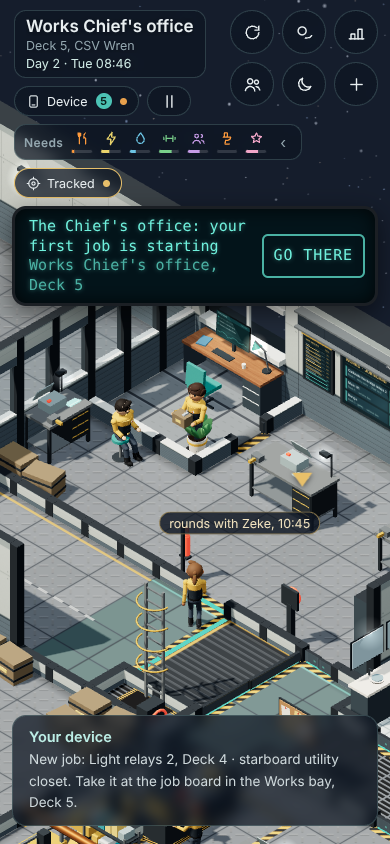

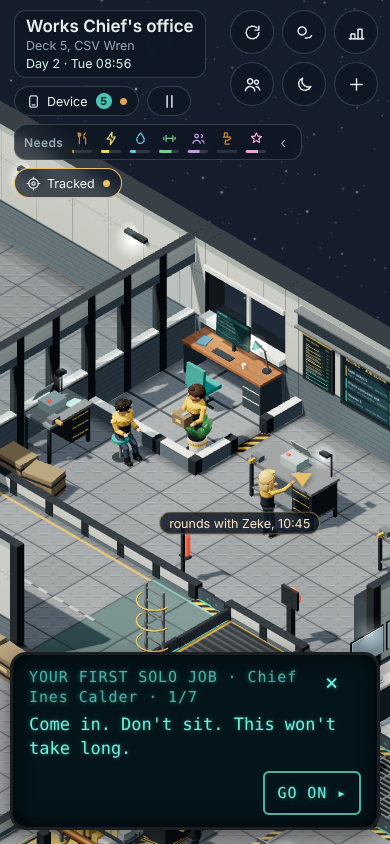

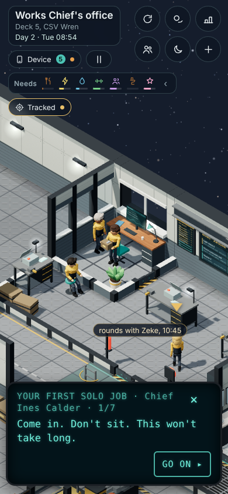
#2Naming: "first job" → "first solo job"A · in #1's turn
YOUR NOTENaming: everything about it says "first solo job" (e.g. the Schedule/heads-up title "The Chief's office: your first job" → "…your first solo job"; Mail, Tracked, Settling-in, lines).
Reproduced: yes (a search of the game and content/; the heads-up in #1's first screenshot reads "your first job is starting"). The places to change:
- Section 19, line 10909,
DEV_BEATS['d2-solo']: "The Chief's office: your first job". This one title feeds the Schedule, the heads-up and Tracked. content/lines/calder.lines:138: "Your first job's mine. Glass office, quarter to nine…"content/meetings/introChief.meet, the gist that goes to Mail if you miss it ("Your first job on Tuesday is hers") and line 13 ("Tuesday, your first job's mine").- Section 21's stand-in words, which only show if the writers' words are missing: line 39189's gist, and line 39543. Line 39543 also gives the wrong time, "Ten to eight". The briefing is at ten to nine.
Already right: the solo job's Mail, its Settling-in item, and Zeke's "your first solo job today". Left alone: lines about any first job ("First job's always the hardest", calls home).
Risk: words only. Dev mode: jump to Day 1 evening and Day 2 08:30 and read the Schedule, the heads-up and Tracked.
#28Day 2's laundry lesson only works if you wake before 09:00A · ½ turn
YOUR NOTEDay 2 laundry tutorial breaks if you don't wake up at 06:00; it must work whenever you get up.
Reproduced: yes. Waking at 06:00, the tip "Tuesday is laundry day…" shows at 06:18, and the wardrobe, hamper, arrow and washer all work. Waking at 09:00 or 10:00, it never shows. Nothing mentions laundry until the 10:00 "Yesterday's clothes" toast or Zeke's line after 16:45.
Cause. The lesson is a tip that may only show between 06:00 and 09:00 on Day 2 (section 15, line 12389: c.d === 2 && c.min >= 6*60 && c.min < 9*60). If you wake after 09:00, its moment never comes.
Fix. The tip becomes due any time on Day 2 when you're awake and not clocked in. Wake late and it shows at once; wake in shift time and it shows when you clock off. A second wording is used once the shift has started, without "before your shift" (writers).
Dev mode: jump to Day 2 with alarms at 06:00, 09:00, 10:30 and 13:00.

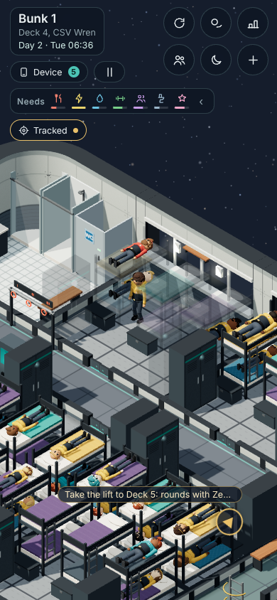

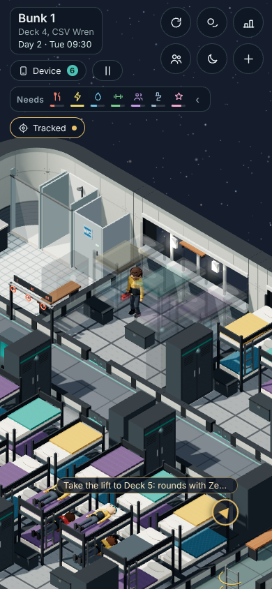
#3The Chief doesn't walk up to you at the arrival dinnerB · 1 turn
YOUR NOTEWelcome tour / intro to the Chief: Calder is there but doesn't walk up to you. She should.
Reproduced: yes. When you reach the table at 18:32, Calder is already sitting across from your seat. She never moves. Zeke's "Oh. Look who's coming over. Sit up straight." plays after she has been sitting there for 14 minutes.
Cause. Your earlier note (0.71.3: "the Chief isn't at the dinner with Zeke") was fixed by seating her across from you from the start of the dinner (section 21, lines 39176-39179). A named seat means she is "there and sitting when it starts" (section 14, line 10529). The writers' lines were written for her arriving.
Fix. During Zeke's chat she eats at a nearby table you can see, so she is still visibly at the dinner (your 0.71.3 point). On "Look who's coming over" she gets up, walks to your table (crewComeTo) and sits across from you. Her meeting starts once she's seated, with a fallback if she's held up.
Dev mode: jump to Day 0 18:30 and replay the dinner.

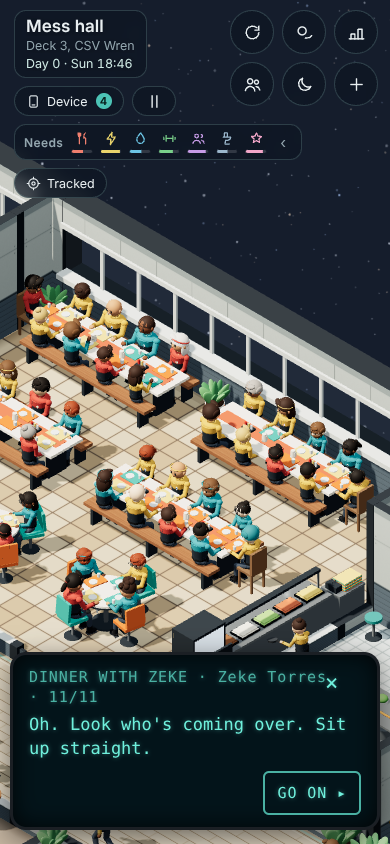
#4Zeke's "the evening's yours" plays in the green panel, not a bubbleB · ½ turn
YOUR NOTEZeke's line after the dinner with the Chief ("the evening's ours" or similar) should be a speech bubble over Zeke, not the green text at the bottom of the screen.
Reproduced: yes, and there are two such lines. The green text is in the dinner chat (a meeting, so it plays in the device panel): "Off at five. Dinner from five till half eight. Then the evening's yours. Gym, lounge, Tiles, bed." Because the Chief sits through that chat (#3), it feels like "after the dinner with the Chief". After she leaves, Zeke's goodnight ("Right, that's me. Evening's yours. Have a wander, explore.") is already a bubble. But only 2 bubbles show at once (section 8b, line 47596), so on a busy table the crowd's chatter can push it off early.
Fix. The writers move the "how a day runs … the evening's yours" lines out of the dinner chat into Zeke's goodnight bubbles (walk.goodnight.1..4, which already takes 4 lines). The chat keeps the question with three replies, which needs the panel. Small code part: hold back the crowd's chatter near you while Zeke says goodnight.
Dev mode: jump to Day 0 18:30.

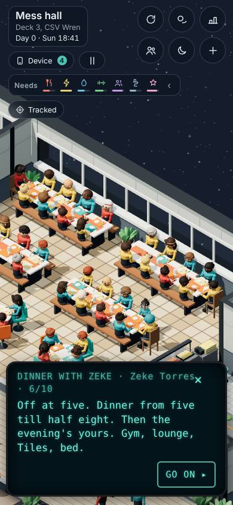

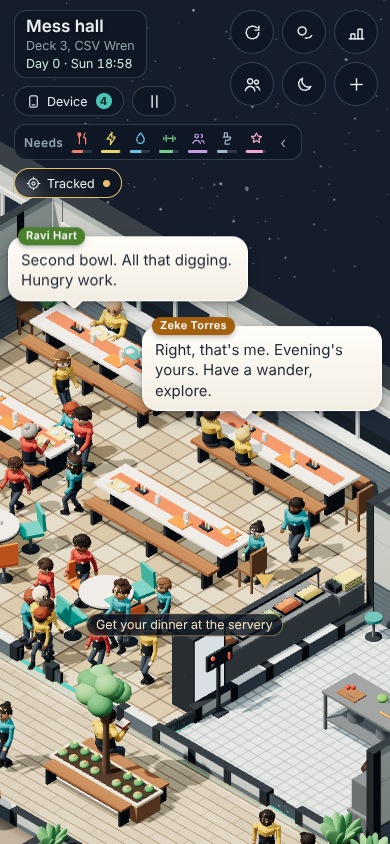
#14The device button the first time you get itB · ½ turn
YOUR NOTEThe device button the first time you get the device: an arrow to it, or it lights up.
Reproduced: yes. When Zeke hands the device over in Bunk 1 (18:16), the button changes from a dim "No device yet" to "Device" with a Mail count. There's no arrow and no lasting glow, only the short pulse that every new Mail gets.
Cause. deviceLockLook() (section 15, lines 13245-13249) only resets the button's look. Nothing points you to the first open (SHIP.device.booted, section 19, line 11069).
Fix. From the moment it's yours until you first open it, the button's teal ring pulses gently and a small "Tap your device" pointer sits under it. Both stop on the first open and never come back. (The same applies on a Monday-start game, where you get the device at the briefing.)
Dev mode: jump to Day 0 18:10.

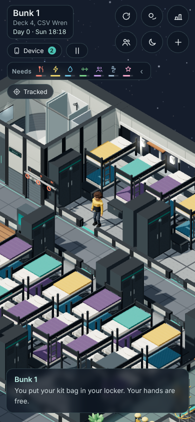
#15Zeke points out the laundry on the wrong side of the shipB · tiny
YOUR NOTEWelcome tour: Zeke points out the laundry room, but it's on the other side of the ship. Fix where he points (or what he says).
Reproduced: yes, from the map. "Laundry there. Put your name in everything. Trust me." (content/lines/torres-zeke.lines:295) is said at the tour stop in the north junior corridor (Deck 4 tile 12,4). The laundry's door is on the south corridor, twelve rows away. It's one of the spare lines said only if there's time, so not everyone hears it.
Fix. Change the words, since the tour doesn't pass the laundry. For example: "Laundry's on the far corridor, past Bunk 4. Put your name in everything." Section 21's stand-in line 39529 gets the same fix.
#11After the Chief's first briefing, a tracked arrow blocks the next arrowsC · ½ turn
YOUR NOTEArrow after the Chief's first briefing (Day 1): if you track the briefing, the arrow doesn't then point to the job board.
Reproduced: yes, exactly. With the briefing tracked, the arrow says "Works bay, Deck 5" from 08:20 to 09:25. It never moves on to "Clock in" or "Take a job at the job board". Untracked, you get "Clock in…" at 08:50 and the board at 09:22.
Cause. A tracked arrow never clears itself when its event is over or you've arrived (section 15b, trkTap, line 14923). The arrival week's own arrows wait politely for any arrow that isn't theirs (section 21, introArrowTick, line 39939), so they wait forever.
Fix. A tracked arrow clears itself once its event has started with you in the room, or once it's over. This fixes any tracked tradition, not just the briefing.
Dev mode: jump to Day 1 08:20, track the briefing, and watch after 09:05. Start any tradition while it's tracked.

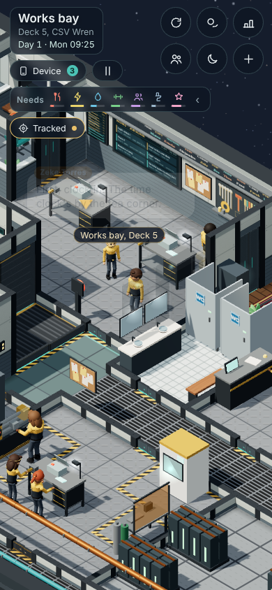

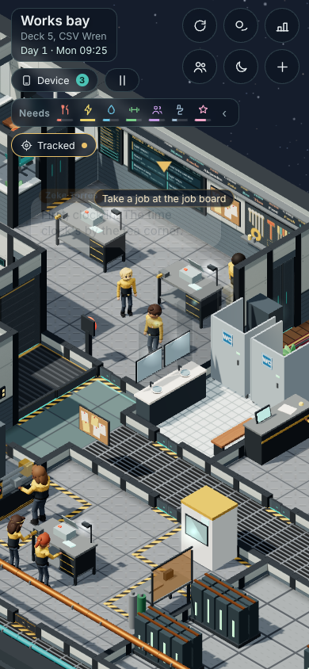
#12Stuck on Zeke with hold-to-walk on training dayC · with #17
YOUR NOTEStuck on Zeke on training day: with hold-to-walk you get stuck on him (collision drops only after ~2 s of pushing); tap-to-walk gets past. Hold-to-walk must slide past him.
Reproduced: yes. Holding to walk into Zeke took 2.87 s to get past, from three angles.
Cause. Crew step aside for you (they "shuffle") unless they're talking (section 15, line 13480: !(a.talking > 0)). On training day Zeke is "talking" nearly all day, because his lesson lines keep that flag on (section 21, line 39817). You only get through by the 2-second push (section 15, line 14143, PUSH_MS = 2000).
Fix. An escort who is following you steps aside even while talking. He carries on talking as he moves.
Dev mode: jump to Day 1 09:15 and hold-walk into him.
#17Zeke and you in the same spot (tour and training day)C · 1 turn
YOUR NOTEZeke and the player clip into the same spot during the welcome tour and training day; they should stand apart.
Reproduced: yes on the tour, partly on training day. Following the arrow, Zeke stood inside you in 3 of 12 checks in the Deck 4 wing, and 11 of 13 leaving for the lift. On training day it follows from the same code.
Cause. Zeke walks to the step's spot, which is the same tile the arrow sends you to, and waits on it. He keeps no gap from you (section 10, escortStep, lines 48728-48751). A tap-to-walk path also walks straight through crew; only other players' walkers are avoided (line 48195). Holding to walk lets you through after #12's push, and since he stands still while talking, you stay overlapped.
Fix. He stops about 0.9 m short of you. When his spot is yours, he takes the free tile beside you and faces you (as crew who come to find you already do, SEEK_BESIDE). A tap that ends on a standing crew member stops on the tile next to them; that part touches every tap, so it's gated or proven identical. The teacher's walk on later training days uses the same code, so it's fixed too.
Dev mode: jump to Day 0 17:30 and Day 1 09:00.

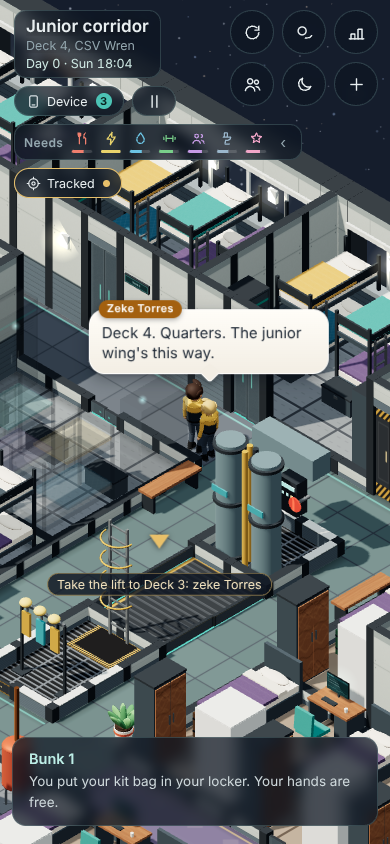
#13The green tip about using your device while you workC · ½ turn
YOUR NOTEThe green tip about checking your device while working: great timing, keep it, but make it more specific: it's about using the device while a long work action fills up (don't say "meters", don't say "in between jobs"); it popping during a long work action makes it clear.
Confirmed from the code. Today's words (content/banks/tips.lines, tip.device): "Working is a good chance to check out your device. Have a look at the apps between jobs." It shows any time you're on shift on Day 1 between 09:30 and 17:00 (section 15, line 12388). That it popped during a long job for you was luck of the timing.
Fix. New words (writers): "While a long job's bar fills, you can open your device: check your Schedule, Mail or Tracked. The work carries on." To keep the timing you liked every time, it now waits for a long work step (a repair hold of about 10 ship minutes or more) to be under way.
Dev mode: jump to Day 1 09:30 and start the first repair.
#18End of training day: Zeke says breakfast, at the wrong timeC · ½ turn
YOUR NOTEEnd of training day: Zeke mentions breakfast instead of dinner and gets the time wrong (it's after 5). When the shift ends he should say good job and that you'll be on your own tomorrow.
Partly reproduced. Nothing is written for the end of training day: Zeke's lesson lines end at 16:30 (section 21b, line 39204). After that he only says his everyday small talk, and one of those lines isn't tied to a time of day: "Ten more minutes with the coils. Breakfast in five." (content/lines/torres-zeke.lines, line 376). That's the breakfast line at the wrong time.
Fix. (1) Writers: that line only in the mornings (? time:morning). (2) A new end-of-day moment on Day 1 at about 16:30-17:15: Zeke comes to find you. Proposed: "Good job today. Proper work, that." then "Tomorrow you're on your own. You'll be fine. Read the card twice." He then walks you to the beam (#19).
Dev mode: jump to Day 1 16:25 in the Works bay.

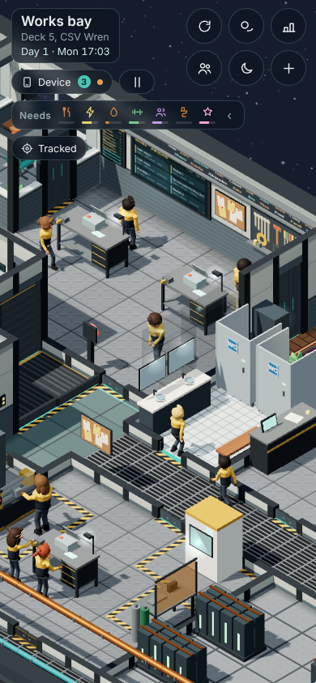
#19Your name on the Works beam: before dinner, arrow at your spotC · 1 turn
YOUR NOTEYour name on the Works beam: should happen before dinner so players don't miss it; and the arrow must point to the right spot on the beam (upper left, where your name goes).
Reproduced: yes. The tradition runs from 17:05 to 17:40, after the shift (content/traditions/name-on-the-beam.trad). The arrow points at the middle of the beam, about 3.4 m right of the top-left slot where your name goes.
Cause. The arrow aims at the beam's centre (section 18, line 34743). It's after the shift, Zeke's day with you ends at 16:30, and dinner opens at 17:00, so players walk off.
Fix. The arrow points at the top-left name slot (BEAM.slots[0]), raised to the beam's height. On your first Monday only, the tradition runs from 16:45 to 17:20, inside the shift: Zeke walks you there as he says good job (#18), and the Works crew come 15 minutes before clock-off. The yearly one for other new hands is unchanged.
Risk: the Works crew's Day 1 plans move, so day_check and events_check differ on Day 1 and food_check's dinner queue changes shape. Dev mode: start the beam tradition on demand to check the arrow; jump to Day 1 16:30 for Zeke's lead.

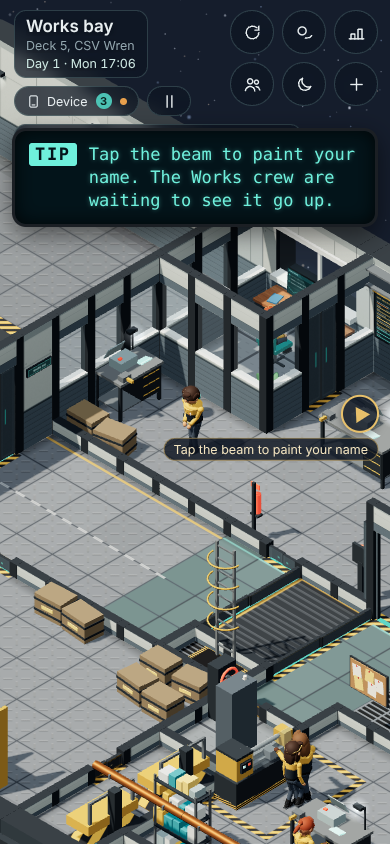
#7The Captain spends too long on Deck 4D · 1 turn
YOUR NOTECaptain on Deck 4: she hangs out there too often; occasionally is fine.
Reproduced: yes (her plans over Days 1-28). Captain Marrow spends 11.3 hours a week on Deck 4 in about 10 visits. The other 13 Deck 2 officers average 3 hours. Most of it is the music room.
Cause. She has two music pulls: a music habit (section 14, line 9197, a strong pull to the Deck 4 music room in any free time), and her "musician" story, which plays on 55% of evenings plus every Thursday (line 10185; Thursday is the late piano tradition).
Fix. Drop the music habit (crew designer, roster generator) and lower the "other evenings" chance from .55 to .15, keeping Thursday's piano. Expected result: about 3-4 hours and 2-3 visits a week, like the other officers.
Dev mode: jump through a week of evenings and count her visits.
#9Crew don't visibly use the toiletsD · 1 turn
YOUR NOTEToilets: the user sees few or no crew using them; crew should visibly use them.
Reproduced: yes, and it's a real bug. The crew plan about 130 toilet visits a day, but only about 16 leave enough time to walk there (none of Deck 3's 34). Example: Tomas leaves his mess seat at 08:56 for a stall and is still walking at 08:59. At 09:00 his visit is over and he heads back, never reaching it.
Cause. A visit lasts 3-6 ship minutes (section 14, lines 9958-9959). Travel time is only added for a deck change (line 9896), but a walk on the same deck takes 5-13 ship minutes.
Fix. Same-deck toilet and handwashing visits get a walk lead: the walking distance between the two places divided by walking speed, then the visit. Both places are fixed map data, so the crew's planner stays repeatable. Optional: a few more people go after waking (morning chance .5 → .7), when you're on Deck 4.
Dev mode: jump to 07:00 and 22:00 on Deck 4; best paired with #8's red light.
#10Crew walking inside each otherD · 1 turn
YOUR NOTECrew walking inside each other: two crew with the same destination who leave the lift together stay overlapped for long stretches; they should keep apart.
Reproduced: yes (Deck 3 at dinner, Day 1 18:07-19:11). 27 pairs came within 0.3 tiles of each other. Two crew stayed one body for about 22 real seconds, and three walked as one stack for 12.
Cause. Everyone walks tile centre to tile centre at the same speed and never looks at other crew (section 10, lines 48642-48645). Two people on the same route stay exactly on top of each other.
Fix. A small sideways lane for each person (about a fifth of a tile, from their own seed, kept off walls). Each person's walking speed varies by a few percent, so pairs drift apart. Optional: a short stagger stepping out of the lift. Their tile positions and paths stay the same, so the "nobody stuck" checks are unchanged.
Risk: the speed spread changes who reaches a seat first, so day_check and cadet_test differ. The lane alone only changes screenshots. Dev mode: jump to 18:00 on Deck 3.
#8The washroom stall light never turns redD · ½-1 turn
YOUR NOTEWashroom light: should actually show red when a toilet is in use.
Reproduced: yes, from the code. The light can't change at all. It's a small green box merged into the stall's mesh (section 4b, line 1434, KM.vacant). Tapping a busy stall already says "Occupied: the little light is red" (section 15, line 12865).
Fix. Each stall's light becomes its own small piece, tied to the stall's place. A shared red material is added (made at load, no random calls). The light turns red while anyone (crew or you) is using the stall.
Risk: about one extra draw call per stall on screen (2-8 per washroom; the budget is 450). Screenshots with stalls in view change. Dev mode: jump to 07:30 on Deck 4.
#25The lift panel's Deck 2 labelE · ¼ turn
YOUR NOTELift panel label: should read "Officer's Quarters - Science" (which deck: to confirm with the user in the patch plan).
Today (section 11, line 49658, DECK_NAMES):
| Deck | On the panel |
|---|---|
| 1 | Bridge |
| 2 | Officers' quarters and science |
| 3 | Commons |
| 4 | Quarters |
| R | Recreation |
| 5 | Operations |
| 6 | Engineering |
Deck 2 is the only deck with both the officers' quarters (aft, the Captain's across the stern) and science (the survey labs and the sensor array, forward).
Fix. Change Deck 2's name, and any copies in the words and the deck signs.

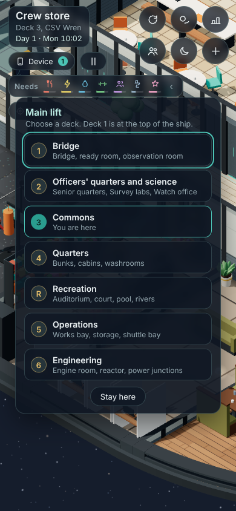
#21Tapping someone: show rank and titleE · ½ turn
YOUR NOTEClicking someone: show their rank and title along with their name.
Reproduced: yes. Tapping the storekeeper shows "Yara Esposito / Storekeeper · stranger": the job title and how well you know them, but no rank. The card is built in section 20 (line 38027) and drawn in section 19 (line 11370). The roster gives every crew member a rank: captain, xo, chief, senior, officer, junior.
Fix. Each rank gets a word (Captain, Commander, Department Chief, Senior Officer, Officer, Crew), e.g. "Crew · Storekeeper · stranger". The rank is left out where the title already says it ("Captain", "Executive Officer", "Head of …"). The same in the device's crew list. The words live in content/.

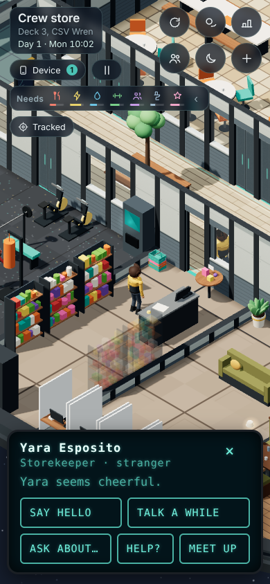
#6Clocking in or out by accidentE · 1-2 turns
YOUR NOTEClocking in/out: it's too easy to clock in and out by accident; add a way to undo a clock-out (and clock-in) right after punching.
Reproduced: yes (Day 3, Deck 5's time clock). After you clock in, "Clock out" appears in exactly the same spot as "Clock in". Before 17:00 it asks "Clock out early?", and the confirm button is again "Clock out" in that same spot. So a double tap clocks you in and straight out, and you can't clock back in ("Shift done. See you tomorrow.").
Cause. The clock screen redraws its buttons in place (section 20, clockScreen, lines 37056-37085). A punch is final at once (careerClock, lines 37026-37042). Clocking out early also costs 2 work reputation, a crew remark and a note to the rest of the game.
Fix, either way: taps are ignored for half a second after the screen changes, and the next button is never where the last one was. Then, per pp-q3: Undo leaves an Undo button on the other side for a few seconds after each punch, and nothing counts (reputation, remark) until it's gone. Or Confirm asks "Clock in now?" with Yes and Cancel set apart, an extra tap twice a day.
Dev mode: jump to any workday at 08:55 or 15:00 and punch twice quickly.

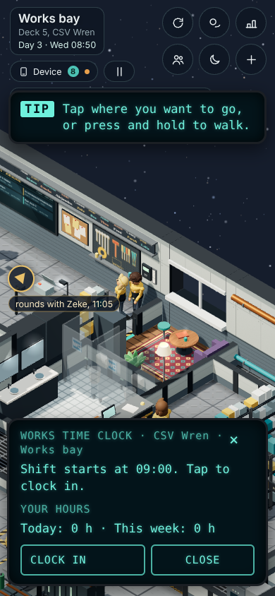

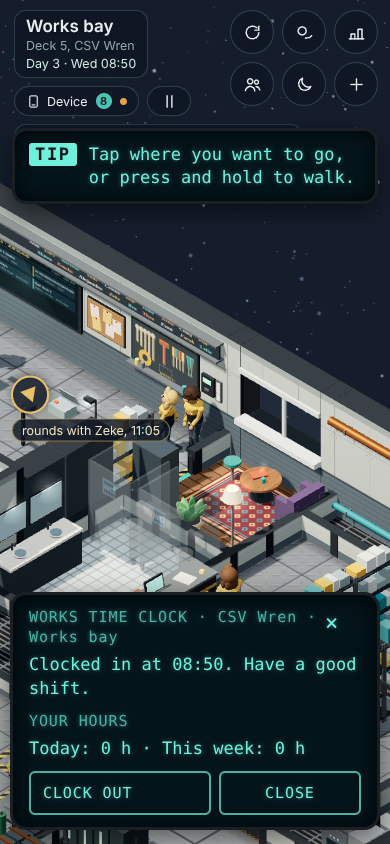

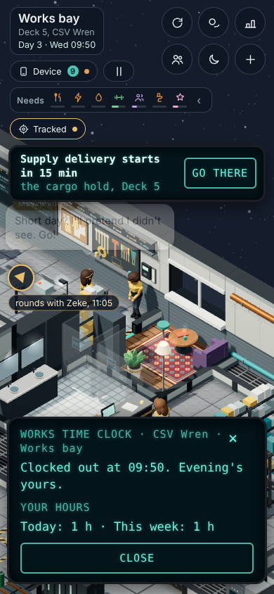
#24The shopkeeper opens a buy menuE · 1-1½ turns
YOUR NOTEThe shopkeeper: tapping them opens a simple buy menu.
Today: tapping a storekeeper opens the chat card. The store does work, but you can't choose. Tapping a shelf hands you "the next thing on that shelf", and you pay at the counter (section 15, storePick line 12716, pay line 12838). The storekeepers are Yara Esposito (mornings) and Orla Ishikawa (14:30-21:00) at Deck 3's crew store. There are 19 goods (STORE, line 12707):
- Snacks: dried apple 2, chocolate 3, spiced nuts 3, flapjack 2, biscuits 3.
- Drinks: fizzy lime 2, cold tea 2, oat milk 2, tin of tea 4.
- Things for your locker or to give: novel 8, soft socks 6, postcard 3, succulent 10, cards 5, candle 7, puzzle book 6, music chip 4, pocket puzzle 4, tiles set 6.
- Hobby supplies.
You start with 40 credits and earn 15 a job.
Fix. When a storekeeper is at the counter, their card gets a "Buy something" button. It opens a simple menu: your credits at the top, then Snacks, Drinks and Things for your locker, with prices. What you can't afford is greyed out ("3 more credits"). Choosing runs today's pay step ("Orla rings it up"), so eating, the locker, gifts and hobbies all work as now. The shelves keep browse-and-pick.
Dev mode: jump to 15:00 (Orla on duty).
#5No tiers on maintenance places, and a ladder that worksE · 2 turns
YOUR NOTEMaintenance access: no more tiered (rank-based) access to maintenance areas like the ladder. And the ladder must work: tap it and a panel like the lift's comes up, with up/down and which deck is which.
Reproduced: yes. Tapping Deck 4's ladder hatch only says "Spine ladder … Tier 2 access." Nothing opens. Service hatches already let you through at any tier; what's still shut:
- The ladder hatches on Decks 1, 2, 3, 4, 6 and R. Deck 5 has only glass.
- Rooms whose text names a tier: Engine control (Tier 3), the Reactor (Tier 4), the Sensor array (Tier 3).
- A few other hatches: the Manifold room's (its room is already open another way), the bay booth and the bay door gear.
Some open rooms still say "Tier N access" in their text. Tiers still decide which jobs you may take, which is your career, not access.
Cause. The ladder hatch isn't on its deck's list of service hatches (section 4c, line 3159), so it stays shut (4a, line 682). Nothing handles a tap on the ladder. "Tier 2 access" is written into the deck texts (4d, 4e).
Fix. Tapping the ladder walks you to it and opens a "Spine ladder" panel in the lift's style (copying openLiftPanel, section 11). It has Up and Down lists, nearest deck first, each with its name, "You are here" and the goal mark. Climbing fades the view, takes about a ship minute a deck, and lands you by that deck's ladder. It also works while the lift is stuck (the lift incident). Each deck gets a landing tile, and Deck 5 gets a ladder hatch. The tier words come out of every text, including backlog #7's "Seven decks". Sealed rooms open per pp-q5. All of it sits behind a LADDER_ON switch.
Risk: the hatch stays a hatch for walking, so paths and crew routes don't change. Opening sealed rooms changes the crew's routes on Decks 2 and 6, unless those doors stay shut to the crew. Dev mode: start the stuck-lift incident on demand; jump to try every deck's landing.

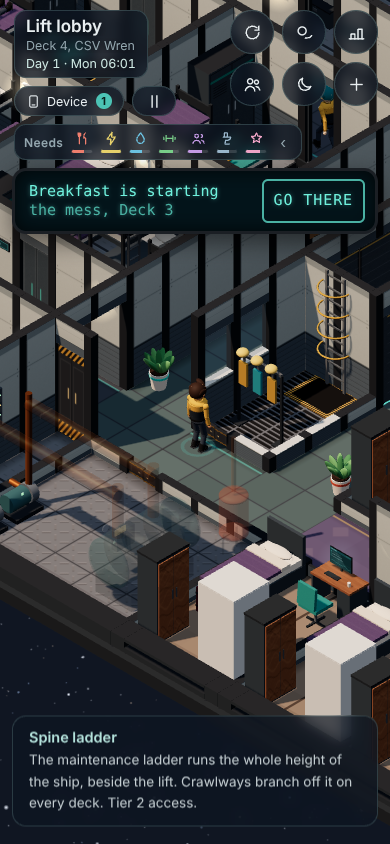
#26One more tradition for your first daysE · 1-2 turns
YOUR NOTEOne more tradition on Day 1, so a new player sees how traditions flow.
Today:
- Day 0: Sunday's earlier traditions are over before you land. The Sunday long table is your arrival dinner.
- Day 1, Monday: Sunrise stretch (06:30), Name on the beam (17:05, a one-off, #19) and Gym club (19:15).
- Monday's Mail goes out on Day 0 at 18:00 with no pop-up, during the tour (section 18, line 34522).
- Gym club comes after Zeke's dinner lines and the bed arrows, and nothing invites you to it.
- The first tradition with the whole flow (Mail, heads-up, invite, tap to join) is Tuesday's Spice shelf supper.
Fix. The tradition shows the flow on purpose: a Mail pop-up at a quiet moment (end of shift); an invite at dinner from Zeke or Pell, using the tradition's own invite line; tap to join; and Settling-in's "Join a tradition" ticks (its teacher is Pell, in the bow lounge). Recommended: a new short, seated, social one on Monday evening, about 19:30-20:15 in the bow lounge with Pell. The writers name it. The arrival evening is the other option, but your 0.70.0 call kept that evening free (Lap of the Wren was moved off it), and it's already full.
Dev mode: jump to Day 1 17:00 as a new arrival, and start the tradition on demand to test the invite and the join.
#16Tier 1 repairs have got slowF · ½ turn
YOUR NOTERepair times, Tier 1: have got a bit slow (tuning).
Today (one ship minute is 1.67 real seconds):
| Step | Ship min | Real s |
|---|---|---|
| Fetch parts | 4 | 7 |
| Look it over | 3 | 5 |
| Service | 20 | 33 |
| Repair | 45 | 75 |
| Overhaul | 90 | 150 |
With walking, a Tier 1 repair takes about 2.5-3 real minutes. Why it feels slower lately: 0.73.0 made leisure drain while you work. From Tuesday afternoon you're "Restless", and that slows tasks by a tenth, so the repair becomes 50 ship minutes (83 s). The same repair runs 59-94 s depending on your needs (section 15, jobMins, line 13596).
Proposed: Tier 1 jobs take two thirds of the time, for you only (the crew's times are unchanged). Repair 45 → 30 ship min (50 s), service 20 → 13, overhaul 90 → 60. Tier 2 and up are unchanged.
#20Hunger hardly moves on a work dayF · ½ turn
YOUR NOTEHunger should go down more during a work day (tuning).
Today: hunger drains 4 an hour awake, whatever you do (section 15, line 12164). On a normal Monday it's 100 after breakfast, 82 at noon and 62 at 17:00. You're never even peckish (under 50) before dinner.
| Hunger | Today (4/h) | 7/h at work (proposed) | 6/h at work |
|---|---|---|---|
| Noon | 82 | 73 | 76 |
| 17:00 | 62 | 38 (peckish from about 14:30) | 46 |
Off shift it stays at 4 an hour.
#22Social should fall like fitnessF · ½ turn
YOUR NOTESocial should go down faster, the same as fitness (tuning).
Today: social already drains faster than fitness (1 an hour awake against fitness's 0.6), but meals in company refill it. Each companion adds 0.2 a minute, so a meal at a table of three gives +12 to +24. Chats add 6, a talk 30, a tradition 12-20. Take a quiet week with no gym, no calls and two chats a day: fitness goes 60 → 0, while social stays at 95.
Proposed: social drains 2.5 an hour (0.5 asleep), and company at meals counts half (0.1). The same quiet week reads 62, 49, 37, 25, 13, 0: about 12 a day, like fitness. A call home (+40), a talk or a tradition brings it back. With the gym and a call every other day, social sits between 63 and 92.
Risk: low social now really happens. "Lonely" makes energy drain slightly faster, and the call-booth nudges show more. The crew's own needs are untouched.
#27Waking at Energy 100 is too easyF · ½ turn
YOUR NOTEWaking up: it shouldn't be so easy to wake up with Energy at 100 (tuning).
Today: sleep gives 12.5 energy an hour (section 15, line 12165). A normal day ends at 20-30 energy, so you wake at 100 whether you go to bed at 22:00 or 23:00.
| Bed (alarm 06:00) | Today | Proposed |
|---|---|---|
| 21:00 | 100 | 100 |
| 22:00 | 100 | 97-99 |
| 23:00 | 100 | 89-91 |
| 00:00 | about 75 | the same |
Proposed: above 85, sleep gives a third as much (about 4 an hour). "Well rested" (75 and over) still comes after a 7-hour night. The alarm clock's energy preview uses the same sum, so it shows the new number.
#23More large-group moments (for the events plan)note
YOUR NOTELarge-group moments: the user loves them; more of them, especially in ship-wide events (feeds the events plan).
Today's big gatherings (share of the crew asked):
- Every week: the Sunday long table (.6, the game's busiest scene, 68 people), Spice shelf supper (.4), Long breakfast (.4), Film night and Tasting table (.35).
- Monthly to yearly: the Captain's all-hands (.7), Harvest supper (.7), Year's end (.8), Midtour (.5), the Lightdisc Cup and talent nights (.4).
Your first week already has the arrival dinner, Name on the beam, Spice shelf supper, New hand's tea, Long breakfast, Film night and the long table.
Proposal for the events plan: one all-hands moment in every ship-wide event. The ion storm: everyone sheltering in the mess for the Captain's address. The comet: crowds at the bow lounge and promenade windows. The diplomatic visit: a welcome line in the Deck 5 bay, then a state dinner. Each needs its own perf_check scene. Not a build item in this patch.
Found in passing (added to the backlog, not in this patch)
- The goal arrow's label lowercases a person's name: "Take the lift to Deck 3: zeke Torres" (section 15b, line 14872; visible in #17's screenshot). Backlog #15.
- The solo job's meeting file header says "Tuesday 07:45"; the game uses 08:45. It's a comment, not shown on screen, and is fixed with #2.
Your answers
Each question has a recommended answer (marked). Pick one, or add a comment. There's a box at the end for anything else.
Planned on claude/patch-plan from claude/integration 5dd740c. The reproduction scripts are kept with the planner's handover; the screenshots are in plans/patch-plan-shots/.